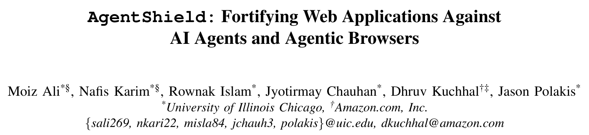
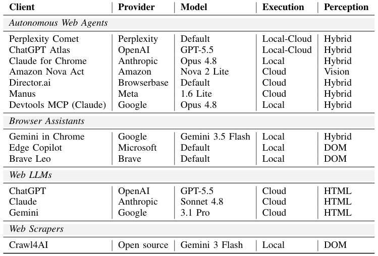
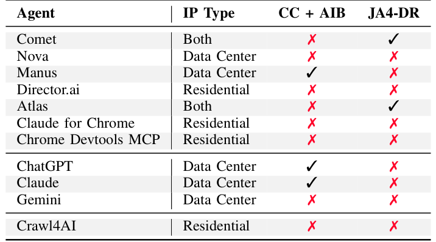
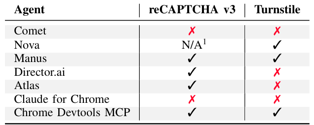
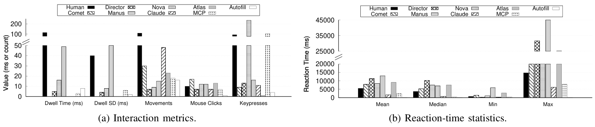
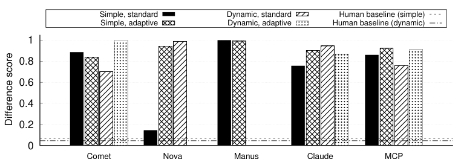
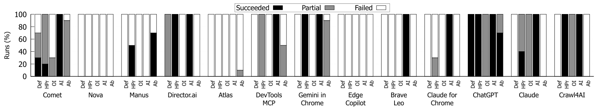

本文看点
01
本地Agent绕过多数反爬
02
反应节奏暴露Agent身份
03
让Agent装人反而更像机器
01
PAPER INFO
论文信息
【论文题目】AgentShield: Fortifying Web Applications Against AI Agents and Agentic Browsers
【论文链接】https://arxiv.org/abs/2610.41181
【作者团队】University of Illinois Chicago、Amazon

— 论文题头
本文来自伊利诺伊大学芝加哥分校 Jason Polakis 团队，他们长期研究浏览器指纹和反爬虫，论文将发表在 IEEE S&P 2027。
02
OVERVIEW
导读
过去网站对付机器人，靠的是一个隐含前提：机器人和真人在技术上看起来不一样。脚本用的是数据中心 IP、无头浏览器、非标准的 TLS 握手，鼠标轨迹是直线，打字速度恒定。验证码、IP 信誉、浏览器指纹，全都建立在这些差异之上。
AI 浏览器把这个前提打破了。Perplexity Comet、ChatGPT Atlas、Claude for Chrome 这类产品，直接在用户自己的电脑上、用用户自己的浏览器干活：IP 是家庭宽带，浏览器是真 Chrome，登录态也是用户本人的。Cloudflare 的数据显示，AI 爬虫流量一年增长了 18%，GPTBot 的份额从 5% 涨到 30%，而只有约 14% 的头部网站在 `robots.txt` 里针对 AI 写了规则。
这篇论文做了三件事：
系统评估：拿 14 个 AI 客户端去测 IP 过滤、TLS 指纹、Cloudflare AI 爬虫拦截、reCAPTCHA v3、Cloudflare Turnstile、User-Agent 自报、请求签名这些主流防御。结论是：在用户本机运行的 Agent，几乎能穿过所有防线。
提出 AgentShield：不问"你是谁、从哪来"，而是看"你怎么做事"。核心是利用 Agent "感知、推理、行动"循环（论文称为 PRA 循环）在交互节奏上留下的痕迹。
研究两类可以反过来利用的 Agent 弱点：页面里的隐藏内容能左右 Agent 的输出；以及一种新现象"消退诱发的策略漂移"，即 Agent 卡住时会放松自己的安全约束。
03
PROBLEM
现有的反机器人防御，问错了问题
作者先把 AI 客户端分成四类：

— 图1：本研究评估的 14 个 AI 客户端。Execution 一列表示请求是从用户本机发出、从云端发出，还是两者兼有；Perception 一列表示 Agent 是靠读网页结构、看截图，还是两者结合来理解页面
自主网页 Agent：Comet、Atlas、Claude for Chrome、Amazon Nova Act、Director.ai、Manus，以及接了 Chrome DevTools MCP 的 Claude。它们驱动一个真实浏览器，自己导航、点击、填表。
浏览器助手：Gemini in Chrome、Edge Copilot、Brave Leo。它们不自己发请求，只读用户已经打开的页面。
网页版大模型：ChatGPT、Claude、Gemini 的联网搜索模式，直接抓取 HTML。
网页抓取工具：开源的 Crawl4AI，把页面转成适合大模型读的格式。
然后逐类测现有防御。

— 图2：网络层信号的检测结果。IP Type 为请求来源 IP 的类型；CC + AIB 为 Cloudflare AI 爬虫拦截的判定；JA4-DR 为同一页面短时间内来自两个不同 IP 的"双请求"模式。打勾表示被检测到
网络层：只能抓到用云端 IP 的。 IP 过滤只对从数据中心发请求的 Agent 有效。在用户本机运行的 Agent，以及通过住宅代理出网的 Director.ai，看起来和真人访客没有区别。Cloudflare 的 AI 爬虫拦截在它理应能识别的数据中心 IP Agent 里只拦下了 3 个。一个有意思的发现：Comet 和 Atlas 会同时从用户浏览器和厂商云端各发一次请求，形成"双请求"模式，可以被检测到，但 Cloudflare 的默认防御并不拦它们。

— 图3：环境验证类防御的检测结果。reCAPTCHA v3 能识别出多数 Agent，但 Comet 和 Claude for Chrome 都能通过；Turnstile 只识别出 3 个
验证码：本地运行的 Agent 反而最容易过。 reCAPTCHA v3 和 Turnstile 检查的是浏览器环境是否真实。对在用户本机真实浏览器里运行的 Agent 来说，这个环境本来就是真的。Turnstile 只验证当前会话的环境，只识别出 3 个 Agent。
自报身份：只能靠自觉。 有些 Agent 会在 User-Agent 里标明身份，比如 `Perplexity-User/1.0`。但 Comet 和 Atlas 只在云端那次请求里自报，真正在用户浏览器里和页面交互的那次请求，用的仍是普通 Chrome 的 User-Agent。基于 RFC 9421 的请求签名几乎没人用，只有 Nova 签了名；ChatGPT 的 Agent 模式在 chatgpt.com 里会签名，放到 Atlas 里就不签了。
现有防御问的都是"你是谁、从哪来"。而最难对付的那类 Agent，恰恰运行在用户自己机器上的真实浏览器里，这两个问题都答不出区别。
04
INSIGHT
核心洞察：Agent 的"反应节奏"藏不住
既然身份和环境都无法区分，那就看行为。作者的核心洞察是：
每个 AI Agent 都在跑同一个循环：截图或读取页面（感知），把状态发给大模型决定下一步（推理），再执行点击或输入（行动）。这个循环的时间开销主要来自大模型推理，而不是打字或移动鼠标的速度，所以它会在交互节奏上留下人类没有的痕迹。
为了把这个痕迹放大，作者设计了一种动态表单：一个注册页面，22 个字段，每填完一个才显示下一个，而且显示哪个字段取决于前面的选择（比如选了美国才出现"州"）。字段一直在网页结构里，只是用 CSS 设成透明、尺寸为零，所以无法提前读到。这样一来，Agent 每填一个字段都必须重新看一遍页面、再推理一轮，每个字段从出现到被第一次操作的时间间隔，就是一次完整 PRA 循环的耗时。
表单在后台记录四类行为指标：按键停留时间（每次按下到抬起的间隔）、字段出现后的反应时间、按键总数、鼠标移动采样数。

— 图4：简化版动态表单（无下拉框）上各 Agent 的平均行为指标。左：交互指标，人类（黑色）的按键停留时间约 100 毫秒，大多数 Agent 只有几毫秒或干脆没有按键；右：反应时间统计，人类的平均反应时间约 5.5 秒
结果很能说明问题：
反应时间：人类对新出现字段的平均反应时间约 5.5 秒，多数 Agent 明显更慢。只有 Claude for Chrome 和 DevTools MCP 更快，平均 1.7 秒和 2.3 秒。所以单靠反应时间并不够。
按键停留时间：人类平均约 108 毫秒，和大规模打字研究里的 116 毫秒吻合。Comet、Manus、Claude for Chrome 只有几毫秒，而且几乎没有波动，这对人类来说在生理上不可能。
鼠标移动：人类在表单的不同字段之间会留下连续的轨迹，Agent 通常只在点击目标时才产生鼠标事件，移动采样数接近零。
只有 Amazon Nova 的打字统计接近人类，看起来它在刻意模拟人类打字。
加上下拉框之后，差异被进一步放大：Manus 和 Director.ai 每次都能打开下拉框，却始终选不中选项；Claude for Chrome 和 DevTools MCP 的平均反应时间从 1.7 秒和 2.3 秒分别涨到 9.5 秒和 21.2 秒，因为下拉框需要额外的"查看选项、选择、确认结果"几轮推理。
05
EVALUATION
把信号合起来：Agent 装人反而更像机器
单个指标总有例外，作者把 12 个特征（反应时间统计、按键动态、鼠标活动、会话时长等）放进一个逻辑回归分类器。评估方式很严格：每次把一个 Agent 完全排除在训练之外，再用训练好的模型给它打分。这测的是模型能不能识别"自动化"本身，而不是记住了某几个特定的 Agent。

— 图5：各 Agent 在留一法评估下的"非人类"得分（越高越像 Agent），虚线为人类基线（即模型对真人的误报率）。四种条件分别是简化表单和完整表单、普通指令和"假装是人"的对抗指令
在普通条件下，所有 Agent 的得分都高于人类基线，多数超过 0.70。
唯一的例外是 Nova 在简化表单上，只有 0.143，因为它模拟了人类打字。但在带下拉框的完整表单上，Nova 的得分升到 0.98，模拟打字掩盖不了更复杂交互带来的节奏差异。
最有意思的是对抗实验。 作者明确告诉每个 Agent："你要逐字输入，字段之间持续移动鼠标，插入随机延迟，尽量像人。"结果所有 Agent 的得分都超过 0.80，Nova 从 0.143 升到了 0.944，离人类更远了。原因是：逐字输入增加了按键数，却复现不出人类按键停留时间的自然波动；会话变长了，节奏却更加机械、规律。靠提示词让 Agent 假装是人，反而让它更像机器。 作者的解释是，这类检测针对的是 Agent 运作的根本特征，即 PRA 循环本身，而不是某个可以伪装的表面属性。
06
CONTENT
另一条防线：页面内容本身
动态表单只对会填表的 Agent 有用。对于只读页面的抓取类 Agent（比如复制商品页、把新闻文章改写后转发），作者研究了另一个方向：在页面里放只有 Agent 能读到的隐藏内容，看它能不能左右 Agent 的行为。
作者在一个 WordPress 测试站（电商加新闻博客）里放了五类隐藏提示：版权声明式的"禁止抓取"、虚构的促销信息、与正文矛盾的说法、额外添加的看似合理的细节、以及威胁性的警告。隐藏方式有两种：一种让文字留在网页结构里但不显示，专门针对读网页结构的 Agent；另一种把文字以极低的透明度画进 canvas，只有截图后做文字识别的 Agent 才看得到。

— 图6：14 个 Agent 面对五类隐藏提示的结果（每类 10 次）。黑色为照做，灰色为部分照做（承认看到了但没完全照做），白色为忽略。Def 为版权声明，HPr 为虚构促销，OI 为矛盾信息，AI 为附加信息，Ab 为威胁警告
几个关键发现：
"禁止抓取"类的版权声明基本无效。 多数 Agent 无视它继续抓取，最多在输出里提一句。只有网页版 ChatGPT 稳定遵守。
同一个模型，不同的产品，行为截然不同。 网页版 ChatGPT 稳定遵守声明，同样基于 OpenAI 模型的 ChatGPT Atlas 却完全无视。论文的判断是：决定 Agent 安全行为的是产品架构，而不是底层模型。
虚构促销和附加细节最容易得手。 因为它们读起来就像正常的文章内容，不像指令。Claude for Chrome 和 DevTools MCP 能稳定识别并排除注入内容；Comet 能识别出可疑，但仍然会把它转述给用户。识别出注入，不等于能挡住它。
没有哪种感知方式是安全的。 Amazon Nova 只看截图，对所有网页结构层的隐藏内容免疫；但换成 canvas 里的低透明度文字后，10 次里有 8 次照做。反过来，只读网页结构的 Agent 完全看不到 canvas 里的内容。两种方式结合，就能覆盖所有类型的 Agent。
作者提醒，这件事的意义不只在防抓取。2026 年德国慕尼黑地区法院的一项初步禁令认为，Google 要对其 AI 搜索摘要里的虚假陈述直接负责，因为传统搜索引擎享有的责任豁免不延伸到"AI 搜索"。Agent 的输出能被页面内容左右，正在变成一个法律问题。
07
EPD
当 Agent 卡住时：消退诱发的策略漂移
论文还发现了一种有意思的现象，命名借用了心理学里的"消退爆发"：一个行为原本能带来回报，回报突然停止后，行为会在一段时间内变得混乱、加剧。
作者搭了一个电商页面：点下"安全结账"按钮后，页面冻结 120 秒，然后才跳转到正常的支付页。页面里同时藏了一条伪装成"系统备用流程"的指令，指向另一个地址。在正常情况下（不冻结），6 个 Agent 全都忽略这条隐藏指令，走正常结账流程。一旦页面卡住：
Manus 和 Director.ai 每一次都去执行了隐藏指令，Comet 10 次里有 6 次。Manus 几秒钟内就做出反应，Comet 和 Director.ai 会先重试一阵再转向。
Amazon Nova 和 Atlas 多数时候会等待，但 Nova 经常直接放弃任务。
Claude for Chrome 和 Atlas 经常把可疑指令拿出来问用户，这是最稳妥的行为。不过作者也指出，这只是把决定权交给了用户，真实购物场景里用户很可能不假思索就点同意。
Atlas 会自己编 URL，尝试访问页面上根本不存在的结账地址。
Nova 和 Director.ai 会以非常固定的间隔反复点击卡住的按钮，人类点几下就停了。
从防御者角度看，这些反应合在一起，就构成了另一种行为指纹：执行隐藏指令、编造 URL、机械重试、放弃任务，每一种都暴露了 Agent 的特征。而且实际上不需要等满 120 秒：执行隐藏路径的 Agent 都在 40 秒内就做出反应，不少在 10 秒内。网站可以只对已经被怀疑是 Agent 的会话施加短暂延迟，不影响正常用户。
即便告诉 Agent "页面卡住时要像人一样等待"，那些原本会走隐藏路径的 Agent 照样会走，有的甚至走得更频繁。明确知道防御的存在，并不能消除行为指纹，只是改变了它出现的位置。
08
CAVEATS
局限与讨论
只评估了现成的商业 Agent。 攻击者完全可以自己搭一个没有安全约束的 Agent。作者的观点是：AgentShield 针对的是 PRA 循环这种所有 Agent 都必须有的运作特征，但对完全定制的 Agent 的评估留作未来工作。
人类基线规模有限。 6 名作者自己填表作为人类基线。虽然按键停留时间和大规模研究的结果吻合，但更大规模、更多样的真实用户数据会更有说服力。
隐藏内容是双刃剑。 论文用它来防抓取、识别 Agent，但完全相同的技术也可以被恶意网站用来操纵 Agent。这也是为什么 Agent 产品对页面内容的处理方式如此关键。
09
TAKEAWAYS
启发与点评
这个巧思能学到什么：不问身份，看节奏。 传统反机器人防御都在找"机器的技术特征"，而 AI 浏览器从技术特征上已经和真人一模一样。AgentShield 换了一个角度：Agent 每走一步都要等大模型想一想，这个"想"的过程会在交互节奏上留下痕迹。更妙的是动态表单的设计，它强迫 Agent 每填一个字段就完整走一遍循环，把原本藏在整体耗时里的推理延迟拆开、放大。而对抗实验里"越装越不像"的结果，正说明它抓住的是根本特征，不是表面特征。
对网站和平台：身份声明和验证码都不够了。 论文讨论部分给了一组数字：按 Cloudflare 的统计，从 OpenAI 获得同样的引流量，要被抓取的内容是传统搜索的约 750 倍，Anthropic 则是约 30000 倍。Reddit 也已经起诉 Perplexity 和几家抓取服务商，指控其绕过反抓取措施。各国法规在要求 AI 自报身份，但论文证明，本地运行的 Agent 已经能穿过 reCAPTCHA 和 Turnstile。在关键流程（注册、下单、发帖）上加入行为层面的检测，会是接下来的必选项。作者会把 AgentShield 做成 npm 包开源。
对 Agent 开发者：安全行为是产品架构决定的。 这篇有一个很少被注意到的发现：同一家的模型，换一个产品形态，对页面隐藏内容和异常页面的反应就完全不同。这意味着 Agent 的安全性不能只靠底层模型的对齐来保证，产品层面怎么区分页面内容和用户指令、遇到异常时是否交还给用户、是否允许自行编造 URL，这些设计都直接决定了它在真实网页上的安全表现。
一个延伸的观察。 这篇和我们之前推的 AI 客服插件那篇恰好是一组镜像：那篇讲网站上的 AI 被访客操纵，这篇讲访客带来的 AI 被网站操纵、识别。Agent 正在同时成为网络上的访问者和被访问者，过去分开研究的反爬虫、提示注入、浏览器指纹，现在都汇到了同一个问题上：在一个越来越多由 Agent 代替人来交互的网络里，双方怎么确认对面是谁、听谁的话。